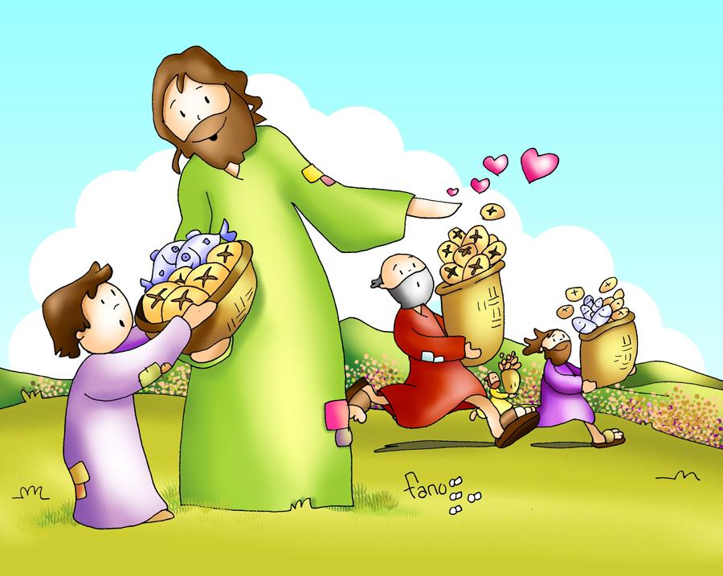
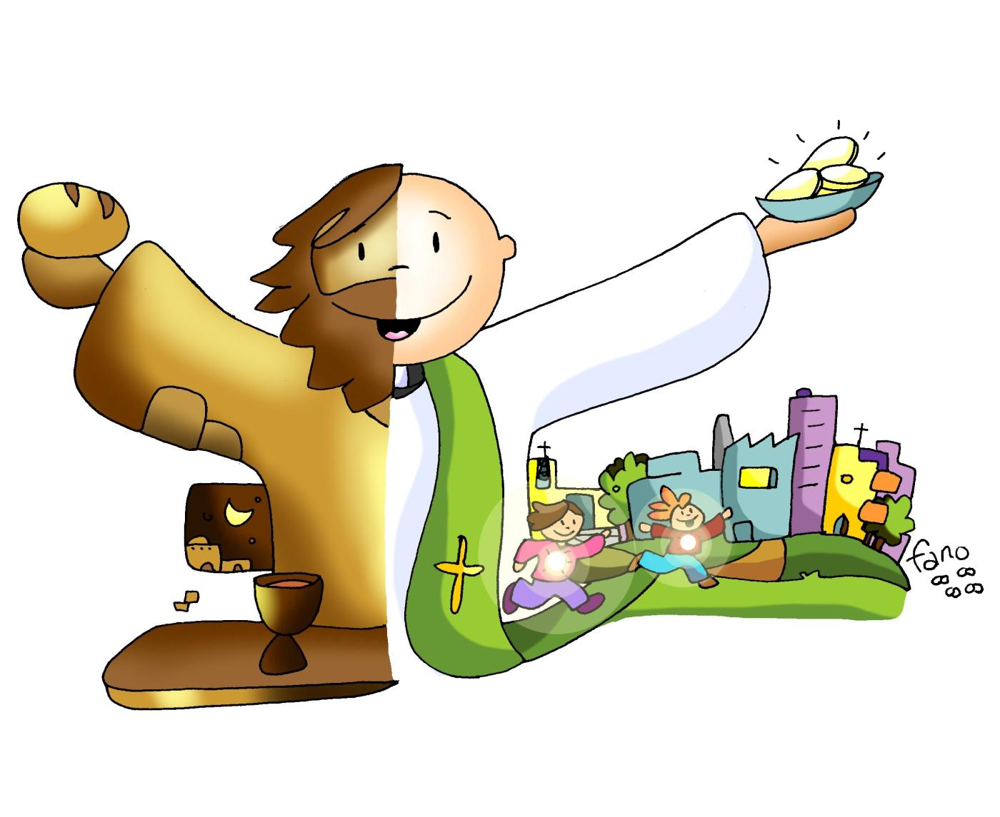
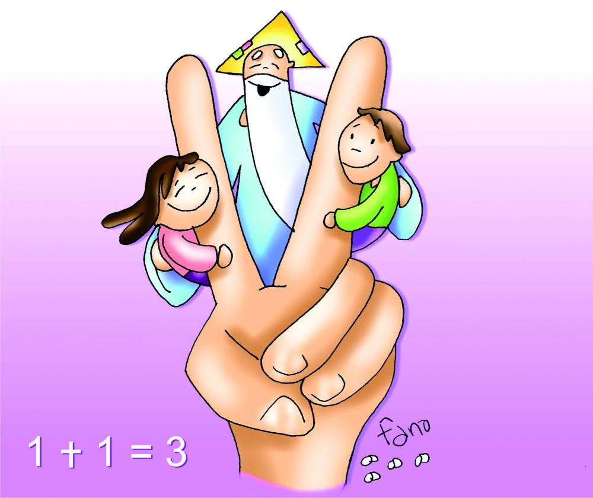
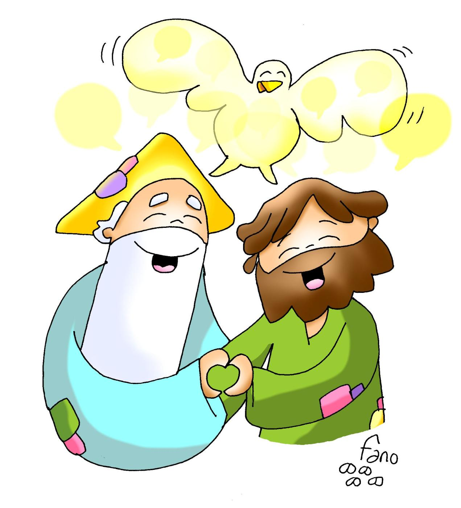

l XXVI Domingo del Tiempo Ordinario
27 de septiembre de 2026


HE VENIDO A SERVIR
Quien quiera ser grande,
quien quiera ser el primero,
sea el esclavo de todos,
sea el más pequeño.
No he venido a ser servido,
que he venido a servir
y a dar la vida por todos
para que todos puedan vivir (2)
en
plenitud (3).

LITURGIA DE LA PALABRA
Escuchemos la Palabra de Dios

ACTO PENITENCIAL
Yo confieso ante Dios todopoderoso
y ante vosotros, hermanos,
que he pecado mucho de pensamiento, palabra, obra y omisión:
por mi culpa, por mi culpa, por mi gran culpa.
Por eso ruego a Santa María, siempre Virgen,
a los ángeles, a los santos y a vosotros, hermanos,
que intercedáis por mí ante Dios, nuestro Señor.
l XXVI Domingo del Tiempo Ordinario · Mateo 21,28-32

ALABO TU BONDAD (1/2)
Todo mi ser canta hoy
por las cosas que hay en mí.
Gracias te doy mi Señor,
Tú me haces tan feliz.
Tú me has regalado tu amistad,
confío en ti, me llenas de tu
Tú me haces sentir tu gran bondad,
yo cantaré por siempre tu fidelidad.
GLORIA A TI, SEÑOR POR TU BONDAD.
GLORIA, GLORIA,
SIEMPRE CANTARÉ TU FIDELIDAD.
GLORIA A TI, SEÑOR POR TU BONDAD.
GLORIA, GLORIA,
SIEMPRE CANTARÉ TU FIDELIDAD.
ALABO TU BONDAD (2/2)
Siempre a tu lado estaré
alabando tu bondad
A mis hermanos diré
el gran gozo que hallo en ti.
En ti podrán siempre encontrar
fidelidad, confianza y amistad.
Nunca fallara tu gran amor,
ni tu perdón. Me quieres tal como soy
GLORIA A TI, SEÑOR POR TU BONDAD.
GLORIA, GLORIA,
SIEMPRE CANTARÉ TU FIDELIDAD.
GLORIA A TI, SEÑOR POR TU BONDAD.
GLORIA, GLORIA,
SIEMPRE CANTARÉ TU FIDELIDAD.
PRIMERA LECTURA
Ezequiel 18,25-28
Así dice el Señor: «Comentáis: «No es justo el proceder del Señor». Escuchad, casa de Israel: ¿es injusto mi proceder?, ¿o no es vuestro proceder el que es injusto? Cuando el justo se aparta de su justicia, comete la maldad y muere, muere por la maldad que cometió. Y cuando el malvado se convierte de la maldad que hizo y practica el derecho y la justicia, él mismo salva su vida. Si recapacita y se convierte de los delitos cometidos, ciertamente vivirá y no morirá.»

SALMO RESPONSORIAL
Sal 24,4 — Recuerda, Señor, que tu misericordia es eterna
Señor, enséñame tus caminos, instrúyeme en tus sendas: haz que camine con lealtad; enséñame, porque tú eres mi Dios y Salvador, y todo el día te estoy esperando.
Recuerda, Señor, que tu ternura y tu misericordia son eternas; no te acuerdes de los pecados; ni de las maldades de mi juventud; acuérdate de mí con misericordia, por tu bondad, Señor.
El Señor es bueno y es recto, y enseña el camino a los pecadores; hace caminar a los humildes con rectitud, enseña su camino a los humildes.

SEGUNDA LECTURA
Filipenses 2,1-11
Si queréis darme el consuelo de Cristo y aliviarme con vuestro amor, si nos une el mismo Espíritu y tenéis entrañas compasivas, dadme esta gran alegría: manteneos unánimes y concordes con un mismo amor y un mismo sentir. No obréis por rivalidad ni por ostentación, dejaos guiar por la humildad y considerad siempre superiores a los demás. No os encerréis en vuestros intereses, sino buscad todos el interés de los demás. Tened entre vosotros los sentimientos propios de Cristo Jesús. Él, a pesar de su condición divina, no hizo alarde de su categoría de Dios; al contrario, se despojó de su rango y tomó la condición de esclavo, pasando por uno de tantos. Y así, actuando como un hombre cualquiera, se rebajó hasta someterse incluso a la muerte, y una muerte de cruz. Por eso Dios lo levantó sobre todo y le concedió el Nombre-sobre-todo-nombre; de modo que al nombre de Jesús toda rodilla se doble en el cielo, en la tierra, en el abismo, y toda lengua proclame: Jesucristo es Señor, para gloria de Dios Padre.
ALELUYA DE LA TIERRA
EL QUE SUFRE, MATA Y MUERE, DESESPERA Y ENLOQUECE,
Y OTROS SON ESPECTADORES, NO LO SIENTEN.
¡ALELUYA! CANTARÁ, QUIEN PERDIÓ LA ESPERANZA,
Y LA TIERRA SONREIRÁ. ¡ALELUYA! (BIS)
EVANGELIO
Mateo 21,28-32
En aquel tiempo, dijo Jesús a los sumos sacerdotes y a los ancianos del pueblo: «¿Qué os parece? Un hombre tenía dos hijos. Se acercó al primero y le dijo: «Hijo, ve hoy a trabajar en la viña.» Él le contestó: «No quiero.» Pero después recapacitó y fue. Se acercó al segundo y le dijo lo mismo. Él le contestó: «Voy, señor.» Pero no fue. ¿Quién de los dos hizo lo que quería el padre?»Contestaron: «El primero.»Jesús les dijo: «Os aseguro que los publicanos y las prostitutas os llevan la delantera en el camino del reino de Dios. Porque vino Juan a vosotros enseñándoos el camino de la justicia, y no le creísteis; en cambio, los publicanos y prostitutas le creyeron. Y, aun después de ver esto, vosotros no recapacitasteis ni le creísteis.»; Palabra del Señor

LITURGIA EUCARÍSTICA
Preparémonos para la mesa del Señor
CREDO
Creo en Dios, Padre todopoderoso,
creador del cielo y de la tierra.
Creo en Jesucristo, su único Hijo, nuestro Señor,
que fue concebido por obra y gracia del Espíritu Santo;
nació de Santa María Virgen; padeció bajo el poder de Poncio Pilato;
fue crucificado, muerto y sepultado; descendió a los infiernos;
al tercer día resucitó de entre los muertos;
subió a los cielos y está sentado a la derecha de Dios Padre todopoderoso.
Desde allí ha de venir a juzgar a vivos y muertos.
Creo en el Espíritu Santo, la santa Iglesia católica,
la comunión de los santos, el perdón de los pecados,
la resurrección de la carne y la vida eterna. Amén.
l XXVI Domingo del Tiempo Ordinario · Mateo 21,28-32

QUE TE PUEDO DAR
¿Qué te puedo dar
que no me hayas dado Tú?
¿Qué te puedo decir que no me hayas dicho Tú?
¿Qué puedo hacer por ti, si yo no puedo hacer nada?
Si yo no puedo hacer nada si no es por ti, mi Dios.
TODO LO QUE SE, TODO LO QUE SOY,
TODO LO QUE TENGO ES TUYO (bis)
l XXVI Domingo del Tiempo Ordinario · Mateo 21,28-32

SANTO JESUITA
SANTO, SANTO, SANTO-O-O,
SANTO ES EL SEÑOR,
DIOS DEL UNIVERSO-O,
DIOS DEL UNIVERSO-O (BIS)
Llenos están el cielo y la tierra de tu gloria.
Hosanna en el cielo-o, hosanna en el cielo-o.
Bendito el que viene en nombre del Señor.
Hosanna en el cielo-o, hosanna en el cielo-o.
ESTRIBILLO (BIS)
SANTO, SANTO, SANTO-O-O,
SANTO ES EL SEÑOR.
l XXVI Domingo del Tiempo Ordinario · Mateo 21,28-32
PADRE NUESTRO (Gallego)
En el mar he oído hoy
Señor tu voz que me llamó
y me pidió que me entregara
a mis hermanos.
Esa voz me transformó,
mi vida entera ya cambió,
y sólo pienso ahora Señor
en repetirte:
PADRE NUESTRO
EN TI CREEMOS,
PADRE NUESTRO
TE OFRECEMOS,
PADRE NUESTRO
NUESTRAS MANOS
DE HERMANOS.
Cuando vaya a otro lugar
tendré Señor que abandonar
a mi familia a mis amigos
por seguirte.
Pero sé que así algún día
podré enseñar tu verdad,
ir a mi hermano y junto a él
yo repetirte.
PADRE NUESTRO…
l XXVI Domingo del Tiempo Ordinario · Mateo 21,28-32

LA PAZ TE DOY
La paz te doy a ti, mi hermano,
la paz que Dios me regaló,
y en un abrazo a ti te entrego
la paz que llevo en mi corazón. (BIS)
Recíbela, recíbela,
esta es la paz
que el mundo no te puede dar.
(BIS)
l XXVI Domingo del Tiempo Ordinario · Mateo 21,28-32

BENDIGAMOS AL SEÑOR (1/2)
Bendigamos al Señor, Dios de toda la creación
por habernos regalado su amor.
Su bondad y su perdón, y su gran fidelidad
por los siglos de los siglos durará.
EL ESPÍRITU DE DIOS HOY ESTÁ SOBRE MI.
ÉL ES QUIEN ME HA UNGIDO A PROCLAMAR
BUENA NUEVA A LOS MÁS POBRES,
GRACIA DE SU SALVACIÓN. (BIS)
Enviados con poder y en el nombre de Jesús
a sanar a los enfermos del dolor,
a los ciegos dar visión, a los pobres la verdad
y a los presos y oprimidos, libertad.
ESTRIBILLO
BENDIGAMOS AL SEÑOR (2/2)
Con la fuerza de su amor y de la resurrección
anunciamos: llega ya la salvación.
Que ni el miedo, ni el temor, ni la duda o la opresión
borrarán la paz de nuestro corazón.
EL ESPÍRITU DE DIOS HOY ESTÁ SOBRE MI.
ÉL ES QUIEN ME HA UNGIDO A PROCLAMAR
BUENA NUEVA A LOS MÁS POBRES,
GRACIA DE SU SALVACIÓN. (BIS)
l XXVI Domingo del Tiempo Ordinario · Mateo 21,28-32
A TU AMPARO Y PROTECCIÓN
A TU AMPARO Y PROTECCIÓN,
MADRE DE DIOS, ACUDIMOS.
NO DESOIGAS NUESTROS RUEGOS
Y DE TODOS LOS PELIGROS,
VIRGEN GLORIOSA Y BENDITA,
DEFIENDE SIEMPRE A TUS HIJOS
l XXVI Domingo del Tiempo Ordinario · Mateo 21,28-32

COMO CORRE UN RÍO
Como corre un río dentro de mi ser (x2)
así yo confío en Cristo, mi Rey (x2)
COMO UN RÍO DE AGUA VIVA,
QUE SALTA P’ARRIBA, QUE LLEVO DENTRO
QUE AFIRMA Y CONFIRMA EN ESTE MOMENTO
EL ESPÍRITU SANTO ESTÁ VINIENDO (X2)
Jesús está pasando por ahí
Jesús está pasando por ahí
Y cuando pasa todo lo transforma
Se va la tristeza, viene la alegría
Y cuando pasa todo lo transforma
Viene la alegría para ti y para mí
COMO UN RÍO DE AGUA VIVA… (X2)
¡ID EN PAZ!
Somos uno · 27 de septiembre de 2026
La paz del Señor esté siempre con vosotros.
«¿Qué os parece? Un hombre tenía dos hijos. Se acercó al primero y le dijo: «Hijo, ve hoy a trabajar en la viña.»